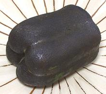
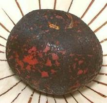
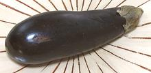
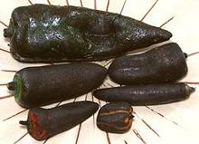
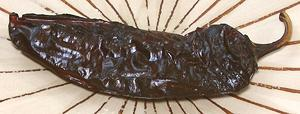
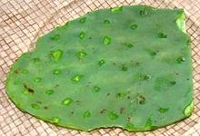
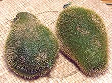

SAFARI
Users
Bell Peppers:
 Every cookbook will give you one to three methods for skinning bell peppers, necessary for most non-salad recipes. All these methods work about as well, which is to say, "not at all well". The typical bell pepper in the photo was charred coal black with the map gas torch in 1-1/2 minutes, with only a few seconds of setup time - and it was still nice and crisp, hardly even warm. It took another 35 seconds to brush the skin off under running water. No holding in a bag required.
The only downside, and for only a few recipes, is that the pepper is
still totally raw. That's an advantage for most recipes, but some presume
you will use their inefficient method, so the pepper will be cooked by
time the skin is charred. For those recipes, just steam them a minute or
two after brushing off the skin - you'll still be way ahead in time,
effort and mess.
Tomatoes:
 The standard method for skinning tomatoes is to scald them one minute in boiling water, quench in cold water, then core and peel. The tomato in the photo was charred black in 35 seconds with the map gas torch, with only a few seconds set-up time and no need to bring water to a boil or clean the pot afterwards. Brushing the skin off under running water took another 30 seconds. It was perfect for use raw because there was no cooking, the torch barely warmed it up. No, the tomato didn't have a charred flavor - you'd have to torch it at least twice as long to get that.
Eggplants:
 Just so you know - the torch Does Not Work at all well on eggplants of any size. For large ones use a very sharp "Y" shaped vegetable peeler. Small ones usually need not be peeled (unless they are white - white ones have very tough skins). Roasting on the grill or in an oven or broiler works better than the torch.
Chilis - Fresh
 Here the torch really shines. All the chilis in the photo took only seconds to blacken, literally. No, there was not a hint of chili fumes - I only encounter those when cleaning up my tools and working surfaces with hot water, wow!
All that remains now is to brush off the skins under running water,
using a regular vegetable brush or similar. They brush off very easily.
If a few flakes still cling to the chili, that's not a problem, and may
enhance flavor in some recipes.
Dried Chilis
 In both Mexico and India, dried chilis are often dry pan roasted. This enhances their flavor and makes them flexible. They are done when they are blackened but not burned.
The torch can also be used, and is very fast, but must be used with
care, and from a greater distance than for fresh chilis. At the first
hint of smoke, pull back and let that part cool while doing another
part. The dried New Mexico chili in the photo was torch roasted, with
considerable care, and did not taste burned. In fact, it was delicious -
I ate the whole thing just as it was.
Cactus Pads (Nopales)
 The torch makes quick work of disarming this difficult to handle vegetable, burning the spines to nothing in seconds. It can then be handled without pain while preparing it for recipes. The cactus pad in the photo is prepared and ready to slice. You will find a lot more detail on our Nopales - Prickly Pear Pads page. The torch works just as well disarming the fruits (Tunas).
Prickly Chayotes
 These guys are really nasty, and they can get you right through plastic bags and even gloves, but the torch disarms them completely in a matter of seconds. Why deal with prickly chayotes at all? Because they have better flavor than those pale green ones.